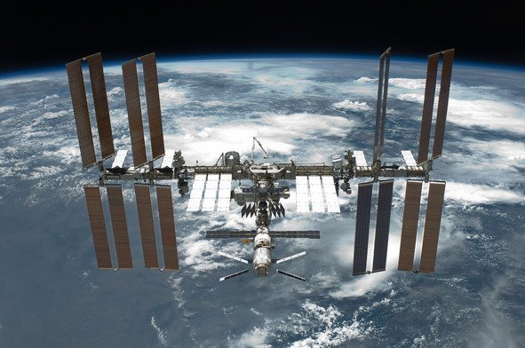
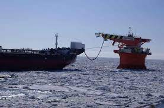
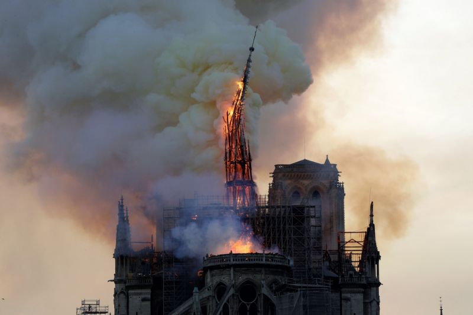

2001 год
 14 февраля — первая в истории посадка космического аппарата на астероид. Завершивший свою космическую миссию аппарат «NEAR Shoemaker» приземлился на астероид 433 Эрос. 1 апреля — В Нидерландах заключены первые в мире однополые браки. 15 июня — лидерами Китая, России, Казахстана, Таджикистана, Киргизии и Узбекистана основана Шанхайская организация сотрудничества ШОС. 30 июня был выведен на орбиту вокруг Земли космический аппарат НАСА WMAP, предназначенный для изучения реликтового излучения, образовавшегося в результате Большого взрыва в момент зарождения Вселенной. Опять упоминание НАСА. А про российские космические корабли «Союз» нет ни слова. Отчасти, это понятно. «Союзы» в начале века летали на МКС с регулярностью пригородных электричек. В общем, на «важнейшее события века» не тянут, ибо обыденность. Кстати, все первые десятилетия XXI века идет активное строительство МКС. К ней пристыковывают новые блоки, доставляют новое оборудование… В целом, о станции сказано следующее: «Международная космическая станция, сокр. МКС (англ. International Space Station, сокр. ISS) — пилотируемая орбитальная станция, используемая как многоцелевой космический исследовательский комплекс; эксплуатировалась с конца 1998 года по 2024 год).

2001 год
 Во вторник, 11 сентября 2001 года, террористы захватили американские пассажирские лайнеры и протаранили на них два небоскреба в Нью-Йорке. Погибли три тысячи человек.
Этот теракт стал одним из самых трагических и знаковых событий современности не только для американцев, но и для всего мира.
11 сентября: их жизнь так и не стала прежней
По каким целям был нанесен удар?
Небольшие группы угонщиков-самоубийц одновременно захватили в воздухе над восточным побережьем США четыре пассажирских лайнера.
Они превратили эти самолеты в гигантские управляемые бомбы, которыми рассчитывали поразить символически важные здания в Нью-Йорке и Вашингтоне.
Два лайнера протаранили башни-близнецы Всемирного торгового центра в Нью-Йорке.
Первый врезался в Северную башню в 08:46 утра по местному времени. Второй - в Южную башню в 09:03 утра.
В башнях вспыхнул пожар, отрезав путь к спасению людям на верхних этажах. Меньше чем через два часа оба 110-этажных небоскреба рухнули.
В 09:37 утра третий лайнер врезался в западный фасад Пентагона - огромного здания министерства обороны США рядом со столицей, Вашингтоном.
В четвертом самолете пассажиры оказали сопротивление захватчикам, и в 10:03 он упал в поле в штате Пенсильвания. Предполагается, что этот лайнер должен был таранить здание Капитолия в Вашингтоне.
Во вторник, 11 сентября 2001 года, террористы захватили американские пассажирские лайнеры и протаранили на них два небоскреба в Нью-Йорке. Погибли три тысячи человек.
Этот теракт стал одним из самых трагических и знаковых событий современности не только для американцев, но и для всего мира.
11 сентября: их жизнь так и не стала прежней
По каким целям был нанесен удар?
Небольшие группы угонщиков-самоубийц одновременно захватили в воздухе над восточным побережьем США четыре пассажирских лайнера.
Они превратили эти самолеты в гигантские управляемые бомбы, которыми рассчитывали поразить символически важные здания в Нью-Йорке и Вашингтоне.
Два лайнера протаранили башни-близнецы Всемирного торгового центра в Нью-Йорке.
Первый врезался в Северную башню в 08:46 утра по местному времени. Второй - в Южную башню в 09:03 утра.
В башнях вспыхнул пожар, отрезав путь к спасению людям на верхних этажах. Меньше чем через два часа оба 110-этажных небоскреба рухнули.
В 09:37 утра третий лайнер врезался в западный фасад Пентагона - огромного здания министерства обороны США рядом со столицей, Вашингтоном.
В четвертом самолете пассажиры оказали сопротивление захватчикам, и в 10:03 он упал в поле в штате Пенсильвания. Предполагается, что этот лайнер должен был таранить здание Капитолия в Вашингтоне.
2004 год
 Утром 18 января 2004 года буксир Annemasse шел вверх по течению реки от Фос-сюр-Мер в Лион. Примерно в это время и произошло столкновение со опорой железнодорожного моста. Annemasse состояла из двух барж: одна для перевозки контейнеров, другая объемом 2200 м3 для транспортировки жидкого бензола. После толчка буксир начал тонуть. Из пяти членов экипажа, находившихся на борту, один погиб, еще четырем удалось спастись.
Утечка бензола, произошедшая в результате аварии, вызвала загрязнение площадью 300 м вокруг судна. Начал свою работу Мобильный центр реагирования. Транспортировка газа по трубопроводу в рамках железнодорожного моста была приостановлена.
Был создан трехуровневый план действий. Во-первых, необходимо было снять контейнер с баржи. Во-вторых, было решено перекачать бензол, оставшийся на борту одной из барж. Наконец, было решено эвакуировать Annemasse из района аварии. В качестве меры предосторожности во время выкачки бензола с баржи были эвакуированы 500 местных жителей, проживающих в окрестностях реки.
Баржу освободили от груза бензола, затем отбуксировали. Температура окружающей среды, которая была выше точки плавления бензола, не помешала процессу откачки жидкого бензола, чему способствовал ряд благоприятных факторов: стабильные погодные условия и тот факт, что буксир Annemasse имел двойной корпус. Положительным моментом стало и то, что коммуникация между службами, осуществлявшими откачку, была налажена на «отлично». Тем не менее, большой объем информации об аварии, часто бессвязной, оказался слишком запутанным для лиц, принимающих решения. Отсутствие специализированного плана на случай непредвиденных для речной перевозки опасных материалов ситуаций также не способствовало улучшению положения.
Этот инцидент привел к пересмотру политики ведомственных управлений по безопасности полетов и анализа рисков и к созданию специализированного плана на случай непредвиденных ситуаций.
Утром 18 января 2004 года буксир Annemasse шел вверх по течению реки от Фос-сюр-Мер в Лион. Примерно в это время и произошло столкновение со опорой железнодорожного моста. Annemasse состояла из двух барж: одна для перевозки контейнеров, другая объемом 2200 м3 для транспортировки жидкого бензола. После толчка буксир начал тонуть. Из пяти членов экипажа, находившихся на борту, один погиб, еще четырем удалось спастись.
Утечка бензола, произошедшая в результате аварии, вызвала загрязнение площадью 300 м вокруг судна. Начал свою работу Мобильный центр реагирования. Транспортировка газа по трубопроводу в рамках железнодорожного моста была приостановлена.
Был создан трехуровневый план действий. Во-первых, необходимо было снять контейнер с баржи. Во-вторых, было решено перекачать бензол, оставшийся на борту одной из барж. Наконец, было решено эвакуировать Annemasse из района аварии. В качестве меры предосторожности во время выкачки бензола с баржи были эвакуированы 500 местных жителей, проживающих в окрестностях реки.
Баржу освободили от груза бензола, затем отбуксировали. Температура окружающей среды, которая была выше точки плавления бензола, не помешала процессу откачки жидкого бензола, чему способствовал ряд благоприятных факторов: стабильные погодные условия и тот факт, что буксир Annemasse имел двойной корпус. Положительным моментом стало и то, что коммуникация между службами, осуществлявшими откачку, была налажена на «отлично». Тем не менее, большой объем информации об аварии, часто бессвязной, оказался слишком запутанным для лиц, принимающих решения. Отсутствие специализированного плана на случай непредвиденных для речной перевозки опасных материалов ситуаций также не способствовало улучшению положения.
Этот инцидент привел к пересмотру политики ведомственных управлений по безопасности полетов и анализа рисков и к созданию специализированного плана на случай непредвиденных ситуаций.
2010 год
 4 октября 2010 на западе Венгрии произошла крупная экологическая катастрофа. На заводе по производству алюминия взрыв разрушил плотину резервуара с ядовитыми отходами — так называемым красным шламом. Около 1,1 миллиона кубометров едкого вещества затопили 3‑метровым потоком города Ко Источник статьи журнал Новости в фотографиях, у которого все копируют контент - BigPicture.ru лонтар и Дечевер в 160 километрах к западу от Будапешта. Красный шлам — это осадок, который образуется при производстве оксида алюминия. При попадании на кожу он воздействует на нее как щелочь. В результате катастрофы 10 человек погибли, около 150 получили различные травмы и ожоги.
4 октября 2010 на западе Венгрии произошла крупная экологическая катастрофа. На заводе по производству алюминия взрыв разрушил плотину резервуара с ядовитыми отходами — так называемым красным шламом. Около 1,1 миллиона кубометров едкого вещества затопили 3‑метровым потоком города Ко Источник статьи журнал Новости в фотографиях, у которого все копируют контент - BigPicture.ru лонтар и Дечевер в 160 километрах к западу от Будапешта. Красный шлам — это осадок, который образуется при производстве оксида алюминия. При попадании на кожу он воздействует на нее как щелочь. В результате катастрофы 10 человек погибли, около 150 получили различные травмы и ожоги.
2011 год
 11 марта 2011 года на северо-востоке Японии на АЭС «Фукусима‑1» после сильнейшего землетрясения произошла крупнейшая за последние 25 лет после катастрофы на Чернобыльской АЭС авария. Вслед за подземными толчками магнитудой 9,0 на побережье пришла огромная волна цунами, которая повредила четыре из шести реакторов атомной станции и вывела из строя систему охлаждения, что привело к серии взрывов водорода, расплав Источник статьи журнал Новости в фотографиях, у которого все копируют контент - BigPicture.ru лению активной зоны. Общий объем выбросов йода-131 и цезия-137 после аварии на АЭС «Фукусима‑1» составил 900 000 терабеккерелей, что не превышает и 20% от выбросов после Чернобыльской аварии в 1986 году, которые составили тогда 5,2 млн терабеккерелей. Суммарный ущерб от аварии на АЭС «Фукусима‑1» эксперты оценили в 74 млрд долларов. Полная ликвидация аварии, в том числе демонтаж реакторов, займет около 40 лет.
11 марта 2011 года на северо-востоке Японии на АЭС «Фукусима‑1» после сильнейшего землетрясения произошла крупнейшая за последние 25 лет после катастрофы на Чернобыльской АЭС авария. Вслед за подземными толчками магнитудой 9,0 на побережье пришла огромная волна цунами, которая повредила четыре из шести реакторов атомной станции и вывела из строя систему охлаждения, что привело к серии взрывов водорода, расплав Источник статьи журнал Новости в фотографиях, у которого все копируют контент - BigPicture.ru лению активной зоны. Общий объем выбросов йода-131 и цезия-137 после аварии на АЭС «Фукусима‑1» составил 900 000 терабеккерелей, что не превышает и 20% от выбросов после Чернобыльской аварии в 1986 году, которые составили тогда 5,2 млн терабеккерелей. Суммарный ущерб от аварии на АЭС «Фукусима‑1» эксперты оценили в 74 млрд долларов. Полная ликвидация аварии, в том числе демонтаж реакторов, займет около 40 лет.

2011 год
 11 июля 2011 года на военно-морской базе неподалеку от Лимасола на Кипре произошел взрыв, который унес 13 жизней и поставил островное государство на грань экономического кризиса, разрушив крупнейшую электростанцию острова. Следователи обвинили президента республики Димитриса Христоф Если ты читаешь эту надпись, значит кто-то взял эту статью с BigPicture.ru иаса в том, что он халатно отнесся к проблеме складирования боеприпасов, конфискованных в 2009 году с судна «Мончегорск» по подозрению в контрабанде оружия Ирану. По факту боеприпасы хранились прямо на земле на территории военно-морской базы и сдетонировали из-за высокой температуры.
11 июля 2011 года на военно-морской базе неподалеку от Лимасола на Кипре произошел взрыв, который унес 13 жизней и поставил островное государство на грань экономического кризиса, разрушив крупнейшую электростанцию острова. Следователи обвинили президента республики Димитриса Христоф Если ты читаешь эту надпись, значит кто-то взял эту статью с BigPicture.ru иаса в том, что он халатно отнесся к проблеме складирования боеприпасов, конфискованных в 2009 году с судна «Мончегорск» по подозрению в контрабанде оружия Ирану. По факту боеприпасы хранились прямо на земле на территории военно-морской базы и сдетонировали из-за высокой температуры.
2011 год
 11 марта 2011 года в результате сильнейшего в истории Японии землетрясения и последовавшего за ним цунами произошла крупная радиационная авария максимального, 7‑го уровня по Международной шкале ядерных событий на АЭС «Фукусима‑1». Финансовый ущерб, включая затраты на ликвидацию последствий, затраты на дезактивацию и компенсации, оценивается в 100 миллиардов долларов. Поскольку работы по устранению последствий займут годы, сумма увеличится. Техногенная катастрофа (англ. Industrial disaster) — крупная авария на техногенном объекте, влекущ Источник статьи журнал Новости в фотографиях, у которого все копируют контент - BigPicture.ru ая за собой массовую гибель людей и даже экологическую катастрофу. Одной из особенностей техногенных катастроф является их случайность (этим они отличаются от терактов). Обычно техногенные противопоставляются природным катастрофам. Однако, подобно природным, техногенные катастрофы могут вызвать панику, транспортный коллапс, а также привести к подъему или потере авторитета власти. Ежегодно в мире происходят десятки техногенных катастроф разного масштаба. В этом выпуске вы найдете перечень крупнейших катастроф, произошедших с начала века.
11 марта 2011 года в результате сильнейшего в истории Японии землетрясения и последовавшего за ним цунами произошла крупная радиационная авария максимального, 7‑го уровня по Международной шкале ядерных событий на АЭС «Фукусима‑1». Финансовый ущерб, включая затраты на ликвидацию последствий, затраты на дезактивацию и компенсации, оценивается в 100 миллиардов долларов. Поскольку работы по устранению последствий займут годы, сумма увеличится. Техногенная катастрофа (англ. Industrial disaster) — крупная авария на техногенном объекте, влекущ Источник статьи журнал Новости в фотографиях, у которого все копируют контент - BigPicture.ru ая за собой массовую гибель людей и даже экологическую катастрофу. Одной из особенностей техногенных катастроф является их случайность (этим они отличаются от терактов). Обычно техногенные противопоставляются природным катастрофам. Однако, подобно природным, техногенные катастрофы могут вызвать панику, транспортный коллапс, а также привести к подъему или потере авторитета власти. Ежегодно в мире происходят десятки техногенных катастроф разного масштаба. В этом выпуске вы найдете перечень крупнейших катастроф, произошедших с начала века.

2013 год
 Китайское грузовое судно Guang Yang Xin Gang опрокинулось и затонуло 18 марта около 17:15 по местному времени. Судно ннаходилось в 40 милях от Лункоу, провинция Шандунь, Бохайский залив, Желтое море. Судно следовало из Тяньцзинь на Тайчжоу. Из 14 человек экипажа один в бессознательном состоянии спасен вертолетом, один считается пропавшим без вести, 12 погибли, их тела извлечены из воды. Китайские СМИ называют Guang Yang Xin Gang контейнеровозом, но подтверждений нет. По оценке Maritime Bulletin, это был костер — каботажное судно.

2019 год
 Два года спустя после масштабного пожара в соборе Парижской Богоматери полным ходом идут работы по подготовке к его реконструкции. Однако то, что планируется, возмущает защитников природы. Собор Парижской Богоматери Редко случалось, чтобы к вырубке деревьев приступали где-либо с такой помпой, как в бывшем королевском лесу Берсе в двух сотнях километров к юго-западу от Парижа, когда в марте окруженные многочисленными журналистами министр сельского хозяйства и продовольствия Франции Жюльен Денорманди и министр культуры этой страны Розлин Башло в торжественной обстановке приколачивали к столетним дубам небольшие таблички с номерами, а затем выступали с речью. "Думаю, Нотр-Дам, являющийся символом нашего прошлого, продемонстрирует, в какой степени леса пишут современную историю", - сказал Денорманди. Розлин Башло высказалась более прозаично: "Нам нужны все эти деревья, поскольку принято решение восстановить собор Парижской Богоматери в первозданном виде - сделать его таким, каким он был до пожара и каким его воссоздал Виолле-ле-Дюк (французский архитектор, реставратор, искусствовед Эжен Виолле-ле-Дюк. - Ред.)", проводивший реставрационные работы с 1843 года".

2020 год
 COVID-19
Для людей, живущих в зонах конфликта, пандемическое распространение коронавируса представляет огромную угрозу жизни. Системы здравоохранения разрушены войной, и для людей в таких местах может быть сложно соблюдать меры предосторожности от коронавируса, когда существуют непосредственные угрозы жизни, такие как обстрелы и бомбардировки.
Мы поддерживаем слаборазвитые системы здравоохранения, недостаточно эффективные во время пандемии коронавирусной инфекции COVID-19. Также мы работаем в тесном сотрудничестве с властями для понимания, какие меры приняты в местах содержания под стражей, чтобы предотвратить распространение коронавируса. Мы напоминаем им о включении заключенных в национальные планы по борьбе с коронавирусной инфекцией.
Во время вспышек заболеваний, в частности в случае коронавируса COVID-19, факты, а не страх, помогут людям защитить себя и своих близких. Международное Движение Красного Креста и Красного Полумесяца распространяет информацию о коронавирусе для широкой публики, чтобы предупредить появление фальшивых новостей и уменьшить передачу слухов, а также убедить сообщества в необходимости социальной дистанции для их собственной безопасности.
COVID-19
Для людей, живущих в зонах конфликта, пандемическое распространение коронавируса представляет огромную угрозу жизни. Системы здравоохранения разрушены войной, и для людей в таких местах может быть сложно соблюдать меры предосторожности от коронавируса, когда существуют непосредственные угрозы жизни, такие как обстрелы и бомбардировки.
Мы поддерживаем слаборазвитые системы здравоохранения, недостаточно эффективные во время пандемии коронавирусной инфекции COVID-19. Также мы работаем в тесном сотрудничестве с властями для понимания, какие меры приняты в местах содержания под стражей, чтобы предотвратить распространение коронавируса. Мы напоминаем им о включении заключенных в национальные планы по борьбе с коронавирусной инфекцией.
Во время вспышек заболеваний, в частности в случае коронавируса COVID-19, факты, а не страх, помогут людям защитить себя и своих близких. Международное Движение Красного Креста и Красного Полумесяца распространяет информацию о коронавирусе для широкой публики, чтобы предупредить появление фальшивых новостей и уменьшить передачу слухов, а также убедить сообщества в необходимости социальной дистанции для их собственной безопасности.